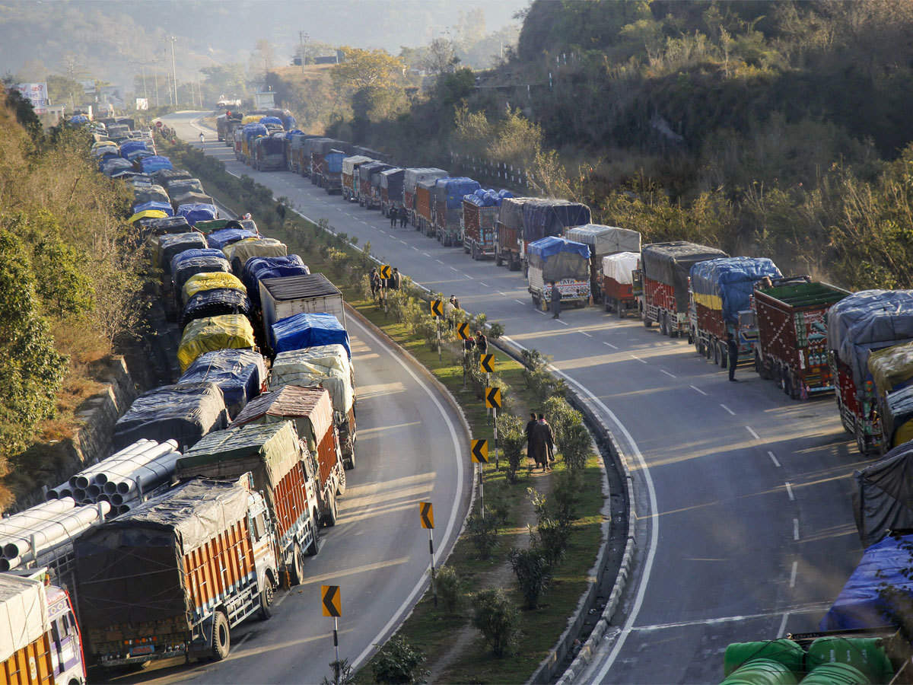
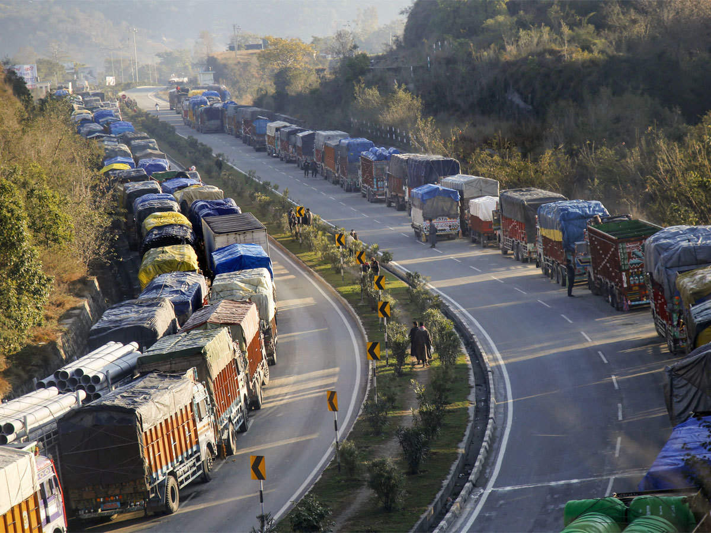

Jammu is the winter capital of the Indian union territory of Jammu and Kashmir. It is the headquarters and the largest city in Jammu district of the union territory. Lying on the banks of the river Tawi, the city of Jammu, with an area of 240 km2 (93 sq mi),[3] is surrounded by the Himalayas in the north and the northern-plains in the south. Jammu is the second most populous city of the union territory. Known as the City of Temples for its ancient temples and Hindu shrines, Jammu is the most visited place in the union territory. Jammu city shares its borders with the neighbouring Samba district.
 
